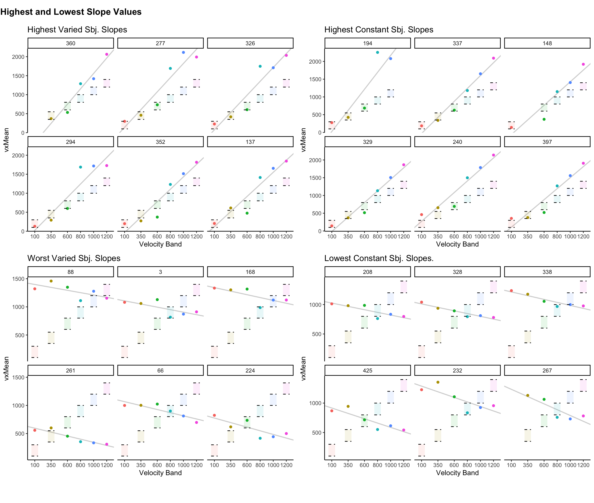
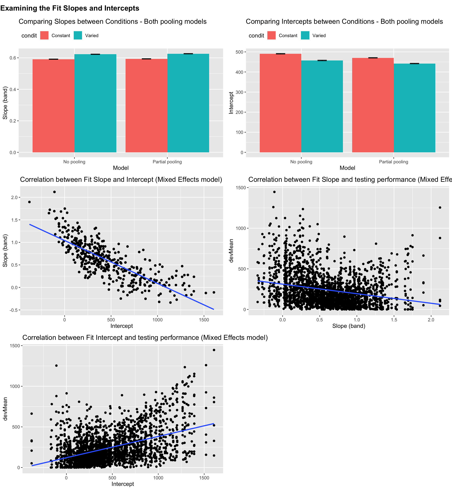
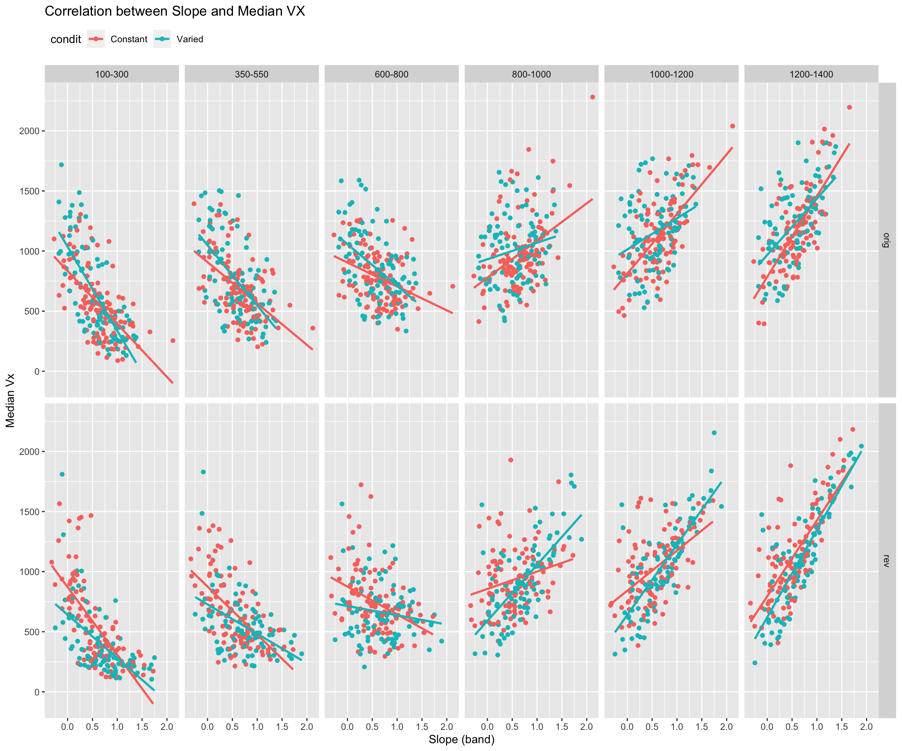
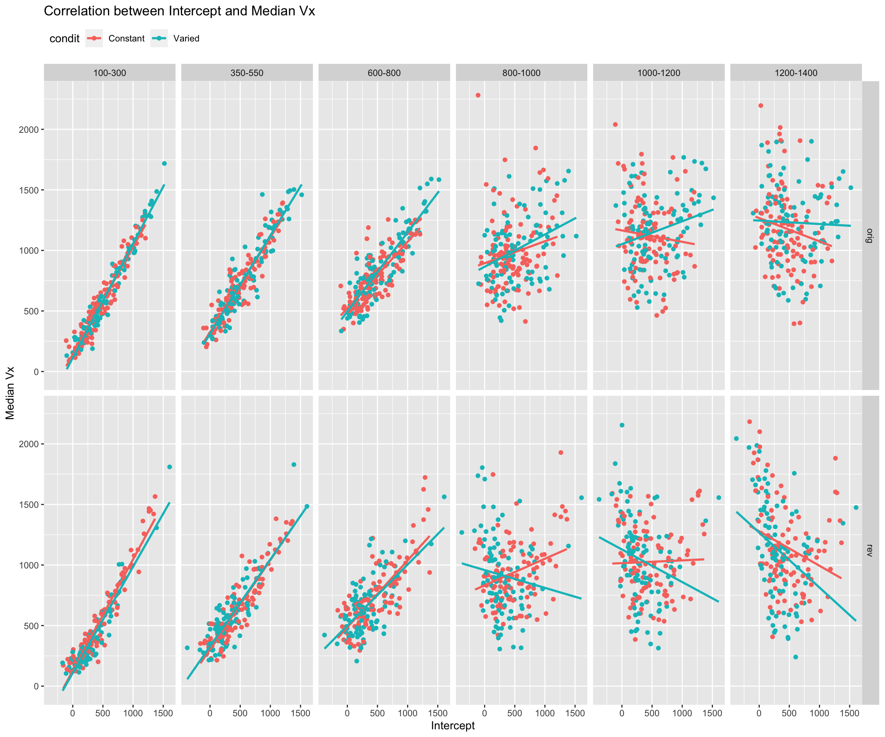
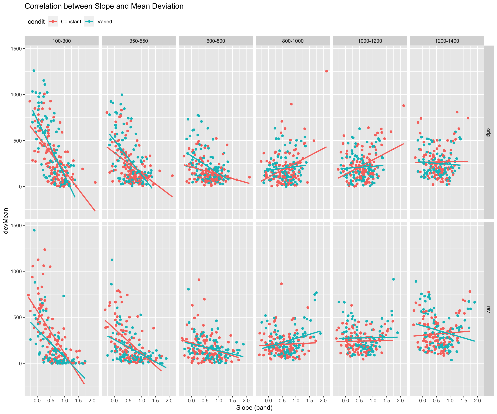

lapply(c('tidyverse','data.table','lme4','lmerTest','knitr','kableExtra','cowplot','gghalves'),library,character.only =TRUE)d <-readRDS('dPrune-01-19-23.rds')dtest <- d %>%filter(expMode %in%c("test-Nf","test-train-nf")) %>%group_by(id,lowBound) %>%mutate(nBand=n(),band=bandInt,id=factor(id)) %>%group_by(id) %>%mutate(nd=n_distinct(lowBound))# unique(dtest[dtest$nd==4,]$sbjCode) # 7 in wrong conditiondtest <- dtest %>%group_by(id,lowBound) %>%filter(nBand>=5& nd==6)# for any id that has at least 1 nBand >=5, remove all rows with that id. dtest <- dtest %>%group_by(id) %>%filter(!id %in%unique(dtest$id[dtest$nBand<5]))dtestAgg <- dtest %>%group_by(id,condit,catOrder,feedbackType,vb,band,lowBound,highBound,input) %>%mutate(vxCapped=ifelse(vx>1600,1600,vx)) %>%summarise(vxMean=mean(vx),devMean=mean(dist),vxMed=median(vx),devMed=median(dist),vxMeanCap=mean(vxCapped),.groups ="keep")
Quick Reminder of General Patterns
Code
fig1aCap=str_wrap("Figure 1a: Bands 100-300, 350-550 and 600-800 are novel extrapolations for both Original Order. Translucent rectangles indicate the correct band " ,width=170)fig1bCap=str_wrap("Figure 1b: Bands 800-1000, 1000-1200, and 1200-1400 are novel extrapolations for both Reverse Order. Translucent rectangles indicate the correct band " ,width=170)plotDist <-function(df,title="",fcap=""){ rectWidth=30 df %>%ggplot()+aes(x = band, y = vxMeanCap, fill=vb) +# Set the color mapping in this layer so the points don't get a colorgeom_half_violin(color=NA)+# remove border colorgeom_half_boxplot(position=position_nudge(x=-0.05),side="r",outlier.shape =NA,center=TRUE,errorbar.draw =FALSE,width=20)+geom_half_point(transformation =position_jitter(width =0.05, height =0.05),size=.3,aes(color=vb))+facet_wrap(~condit,scale="free_x")+geom_rect(aes(xmin=band-rectWidth,xmax=band+rectWidth,ymin=band,ymax=highBound,fill=vb),alpha=.01)+geom_segment(aes(x=band-rectWidth,xend=band+rectWidth,y=highBound,yend=highBound),alpha=.8,linetype="dashed")+geom_segment(aes(x=band-rectWidth,xend=band+rectWidth,y=band,yend=band),alpha=.8,linetype="dashed")+labs(x ="Velocity Band", y ="vxMean",caption=fcap) +scale_y_continuous(expand=expansion(add=100),breaks=round(seq(0,2000,by=200),2))+scale_x_continuous(labels=sort(unique(df$band)),breaks=sort(unique(df$band)))+ggtitle(title) +theme(legend.position ="none")+theme_classic()+guides(fill="none",color="none")+theme(plot.caption=element_text(hjust=0,face="italic"))}#dtestAgg %>% plotDist()dtestAgg %>%filter(catOrder=="orig") %>%plotDist(title="Empirical Vx - Original Order",fcap=fig1aCap)
naive model that fits single slope and intercept to all subjects
Code
# Fit a model on all the data pooled togetherm_pooled <-lm(vxMean ~ band, dtestAgg) # Repeat the intercept and slope terms for each participantdf_pooled <-tibble(Model ="Complete pooling",id =unique(dtestAgg$id),Intercept =coef(m_pooled)[1], Slope_band =coef(m_pooled)[2])#head(df_pooled)# print the coefficents and residual of the modelsummary(m_pooled)
Call:
lm(formula = vxMean ~ band, data = dtestAgg)
Residuals:
Min 1Q Median 3Q Max
-879.55 -214.41 -43.26 177.10 1300.93
Coefficients:
Estimate Std. Error t value Pr(>|t|)
(Intercept) 480.69135 12.55505 38.29 <2e-16 ***
band 0.59085 0.01641 36.00 <2e-16 ***
---
Signif. codes: 0 '***' 0.001 '**' 0.01 '*' 0.05 '.' 0.1 ' ' 1
Residual standard error: 302.9 on 2450 degrees of freedom
Multiple R-squared: 0.346, Adjusted R-squared: 0.3457
F-statistic: 1296 on 1 and 2450 DF, p-value: < 2.2e-16
Fit no pooling model (individual fit for each subject)
Code
df_no_pooling <-lmList(vxMean ~ band | id, dtestAgg) %>%coef() %>%rownames_to_column("id") %>%rename(Intercept =`(Intercept)`, Slope_band = band) %>%add_column(Model ="No pooling")# print average coefficients and average residual for the modelsummary(df_no_pooling)
id Intercept Slope_band Model
Length:418 Min. :-461.2 Min. :-0.4938 Length:418
Class :character 1st Qu.: 185.9 1st Qu.: 0.2338 Class :character
Mode :character Median : 397.0 Median : 0.5976 Mode :character
Mean : 475.1 Mean : 0.6059
3rd Qu.: 733.3 3rd Qu.: 0.9334
Max. :1657.5 Max. : 2.3819
Code
# print average residual of no pooling modelsummary(df_no_pooling$vxMean ~ df_no_pooling$band | df_no_pooling$id)
Length Class Mode
3 formula call
Code
# sort the dataframe by the value of slope_band, highest to lowesttestSlopeIndv <- df_no_pooling %>%arrange(desc(Slope_band))# Add a condit column to the dataframe, matching condition based on the value in dtestAgg for each sbjCodetestSlopeIndv <- testSlopeIndv %>%left_join(dtestAgg %>%ungroup() %>%select(id, condit) %>%distinct(), by ="id") # Add a rank column to the dataframe, based on the value of slope_band. Smallest rank for highest value.testSlopeIndv <- testSlopeIndv %>%group_by(condit) %>%mutate(nGrp=n(),rank = nGrp -rank(Slope_band) +1,quantile =cut(rank, breaks =4, labels =c("1st", "2nd", "3rd", "4th")),quintile=cut(rank,breaks=5,labels=c("1st", "2nd", "3rd", "4th","5th")),decile=cut(rank,breaks=10,labels=c(1:10))) %>%#select(-n)%>%arrange(rank)# Reorder the sbjCode column so that the sbjCode with the highest slope_band is firsttestSlopeIndv$id <-factor(testSlopeIndv$id, levels = testSlopeIndv$id)#head(testSlopeIndv)
Some individual plots showing the best fitting line to testing data
subset of high, and low discriminating subjects
correct bands shown with translucent rectangles
Code
# create plotting function that takes in a dataframe, and returns ggplot object#rewrite plotSlope function to take line color as a function argument, and set the color of abline to that argumentplotSlope <-function(df,title="",colour=NULL){ rectWidth=50 df %>%ggplot()+aes(x = band, y = vxMean) +# Set the color mapping in this layer so the points don't get a colorgeom_abline(aes(intercept = Intercept, slope = Slope_band),size = .75,colour=colour,alpha=.2 ) +geom_point(aes(color=vb)) +facet_wrap("id") +geom_rect(aes(xmin=band-rectWidth,xmax=band+rectWidth,ymin=band,ymax=highBound,fill=vb),alpha=.1)+geom_segment(aes(x=band-rectWidth,xend=band+rectWidth,y=highBound,yend=highBound),alpha=1,linetype="dashed")+geom_segment(aes(x=band-rectWidth,xend=band+rectWidth,y=band,yend=band),alpha=1,linetype="dashed")+labs(x ="Velocity Band", y ="vxMean") +scale_x_continuous(labels=sort(unique(df$band)),breaks=sort(unique(df$band)))+ggtitle(title) +theme(legend.position ="none")+theme_classic()+guides(fill="none",color="none")}tv<-testSlopeIndv %>%left_join(dtestAgg, by =c("id","condit")) %>%filter(condit=="Varied",rank<=6) %>%plotSlope(.,colour="black",title="Highest Varied Sbj. Slopes")
Warning: Using `size` aesthetic for lines was deprecated in ggplot2 3.4.0.
ℹ Please use `linewidth` instead.
Code
tc<-testSlopeIndv %>%left_join(dtestAgg, by =c("id","condit")) %>%filter(condit=="Constant",rank<=6) %>%plotSlope(.,colour="black",title="Highest Constant Sbj. Slopes")bv<-testSlopeIndv %>%left_join(dtestAgg, by =c("id","condit")) %>%filter(condit=="Varied",rank>=nGrp-5) %>%plotSlope(.,colour="black",title="Worst Varied Sbj. Slopes")bc<-testSlopeIndv %>%left_join(dtestAgg, by =c("id","condit")) %>%filter(condit=="Constant",rank>=nGrp-5) %>%plotSlope(.,colour="black",title="Lowest Constant Sbj. Slopes.")title =ggdraw()+draw_label("Highest and Lowest Slope Values",fontface ='bold',x=0,hjust=0)+theme(plot.margin =margin(0, 0, 0, .5))plot_grid(title,NULL,tv,tc,bv,bc,NULL,ncol=2,rel_heights =c(.1,1,1))

Fit partial pooling model (linear mixed model with random slope and intercept)
Code
bm1 <-lmer(vxMed ~1+ band + (1+ band | id), dtestAgg, control =lmerControl(optimizer ="bobyqa", optCtrl =list(maxfun =3e5)))arm::display(bm1)
lmer(formula = vxMed ~ 1 + band + (1 + band | id), data = dtestAgg,
control = lmerControl(optimizer = "bobyqa", optCtrl = list(maxfun = 3e+05)))
coef.est coef.se
(Intercept) 457.18 18.94
band 0.61 0.02
Error terms:
Groups Name Std.Dev. Corr
id (Intercept) 369.23
band 0.45 -0.79
Residual 136.75
---
number of obs: 2452, groups: id, 418
AIC = 33227.2, DIC = 33219.1
deviance = 33217.1
Linear mixed model fit by REML. t-tests use Satterthwaite's method [
lmerModLmerTest]
Formula: vxMed ~ 1 + band + (1 + band | id)
Data: dtestAgg
Control: lmerControl(optimizer = "bobyqa", optCtrl = list(maxfun = 3e+05))
REML criterion at convergence: 33215.2
Scaled residuals:
Min 1Q Median 3Q Max
-3.4482 -0.4578 -0.0161 0.4422 5.0822
Random effects:
Groups Name Variance Std.Dev. Corr
id (Intercept) 1.363e+05 369.2342
band 2.060e-01 0.4539 -0.79
Residual 1.870e+04 136.7458
Number of obs: 2452, groups: id, 418
Fixed effects:
Estimate Std. Error df t value Pr(>|t|)
(Intercept) 457.17775 18.93837 422.24016 24.14 <2e-16 ***
band 0.60869 0.02345 418.74433 25.95 <2e-16 ***
---
Signif. codes: 0 '***' 0.001 '**' 0.01 '*' 0.05 '.' 0.1 ' ' 1
Correlation of Fixed Effects:
(Intr)
band -0.797
optimizer (bobyqa) convergence code: 0 (OK)
Model failed to converge with max|grad| = 3.29001 (tol = 0.002, component 1)
Model is nearly unidentifiable: very large eigenvalue
- Rescale variables?
Model is nearly unidentifiable: large eigenvalue ratio
- Rescale variables?
Code
# filter to only retain the no pooling and partial pooling models. # Compare the average slope and intercepts between constant and varied condits. Use barplots with standard error barsdf_models <-bind_rows(df_pooled, df_no_pooling, df_partial_pooling) %>%left_join(dtestAgg, by =c("id"))grpAvg<- df_models %>%filter(Model %in%c("No pooling", "Partial pooling")) %>%group_by(id,Model) %>%slice(1) %>%group_by(Model, condit) %>%summarise(n=n(),Intercept =mean(Intercept), Slope_band =mean(Slope_band), ) %>%mutate( Intercept_se =sd(Intercept)/sqrt(n),Slope_band_se =sd(Slope_band)/sqrt(n), .groups="keep")#head(grpAvg) p1=grpAvg %>%ggplot() +aes(x = Model, y = Slope_band, fill = condit) +geom_col(position ="dodge") +geom_errorbar(aes(ymin = Slope_band - Slope_band_se, ymax = Slope_band + Slope_band_se), width =0.2, position =position_dodge(0.9)) +labs(x ="Model", y ="Slope (band)") +theme(legend.position ="top", legend.justification ="left")+ggtitle("Comparing Slopes between Conditions - Both pooling models") p2=grpAvg %>%ggplot() +aes(x = Model, y = Intercept, fill = condit) +geom_col(position ="dodge") +geom_errorbar(aes(ymin = Intercept - Intercept_se, ymax = Intercept + Intercept_se), width =0.2, position =position_dodge(0.9)) +labs(x ="Model", y ="Intercept") +theme(legend.position ="top", legend.justification ="left")+ggtitle("Comparing Intercepts between Conditions - Both pooling models")# For the partial pooling model, visualize the correlation between the intercept and slope for each subject.# Use geom_smooth to fit a linear model to the data, and plot the line of best fit.p3=df_models %>%filter(Model =="Partial pooling") %>%ggplot() +aes(x = Intercept, y = Slope_band) +geom_point() +geom_smooth(method ="lm", se =FALSE) +labs(x ="Intercept", y ="Slope (band)") +theme(legend.position ="top", legend.justification ="left")+ggtitle("Correlation between Fit Slope and Intercept (Mixed Effects model)")# For the partial pooling model, visualize the correlation between slope and devMean for each subject.# Use geom_smooth to fit a linear model to the data, and plot the line of best fit.p4=df_models %>%filter(Model =="Partial pooling") %>%ggplot() +aes(x = Slope_band, y = devMean) +geom_point() +geom_smooth(method ="lm", se =FALSE) +labs(x ="Slope (band)", y ="devMean") +theme(legend.position ="top", legend.justification ="left")+ggtitle("Correlation between Fit Slope and testing performance (Mixed Effects model)")# For the partial pooling model, visualize the correlation between Intercept and devMean for each subject.p5=df_models %>%filter(Model =="Partial pooling") %>%ggplot() +aes(x = Intercept, y = devMean) +geom_point() +geom_smooth(method ="lm", se =FALSE) +labs(x ="Intercept", y ="devMean") +theme(legend.position ="top", legend.justification ="left")+ggtitle("Correlation between Fit Intercept and testing performance (Mixed Effects model)")title =ggdraw()+draw_label("Examining the Fit Slopes and Intercepts",fontface ='bold',x=0,hjust=0)+theme(plot.margin =margin(0, 0, 0, .5))plot_grid(title,NULL,p1,p2,p3,p4,p5,ncol=2,rel_heights =c(.1,1,1,1))

Correlation between parameters and Vx
Noteworthy that The correlation between slope and Vx is strongest for the slowest bands (100-300 and 350-550), for both original and reverse ordered groups. The slow positions are extrapolation for the Original ordered group, and trained by the reverse ordered group.
Fairly similar patterns for Slope and Intercept
Code
# For the partial pooling model, visualize the correlation between slope and devMean for each subject. Facet by vb~catOrder. Group and color by condit. # Use geom_smooth to fit a linear model to the data, and plot the line of best fit.df_models %>%filter(Model =="Partial pooling") %>%ggplot() +aes(x = Slope_band, y = vxMed, color = condit) +geom_point() +geom_smooth(method ="lm", se =FALSE) +labs(x ="Slope (band)", y ="Median Vx") +theme(legend.position ="top", legend.justification ="left") +facet_grid(catOrder~vb)+ggtitle("Correlation between Slope and Median VX")
`geom_smooth()` using formula = 'y ~ x'

Code
df_models %>%filter(Model =="Partial pooling") %>%ggplot() +aes(x = Intercept, y = vxMed, color = condit) +geom_point() +geom_smooth(method ="lm", se =FALSE) +labs(x ="Intercept", y ="Median Vx") +theme(legend.position ="top", legend.justification ="left") +facet_grid(catOrder~vb)+ggtitle("Correlation between Intercept and Median Vx")
`geom_smooth()` using formula = 'y ~ x'

Correlation between parameters and Mean Deviation.
Here we see a powerful effect of slope for the slow bands (larger slopes tend to have smaller deviation)
Code
# For the partial pooling model, visualize the correlation between slope and devMean for each subject. Facet by vb~catOrder. Group and color by condit. # Use geom_smooth to fit a linear model to the data, and plot the line of best fit.df_models %>%filter(Model =="Partial pooling") %>%ggplot() +aes(x = Slope_band, y = devMean, color = condit) +geom_point() +geom_smooth(method ="lm", se =FALSE) +labs(x ="Slope (band)", y ="devMean") +theme(legend.position ="top", legend.justification ="left") +facet_grid(catOrder~vb)+ggtitle("Correlation between Slope and Mean Deviation")
`geom_smooth()` using formula = 'y ~ x'

Code
df_models %>%filter(Model =="Partial pooling") %>%ggplot() +aes(x = Intercept, y = devMean, color = condit) +geom_point() +geom_smooth(method ="lm", se =FALSE) +labs(x ="Intercept", y ="devMean") +theme(legend.position ="top", legend.justification ="left") +facet_grid(catOrder~vb)+ggtitle("Correlation between Intercept and Mean Deviation")